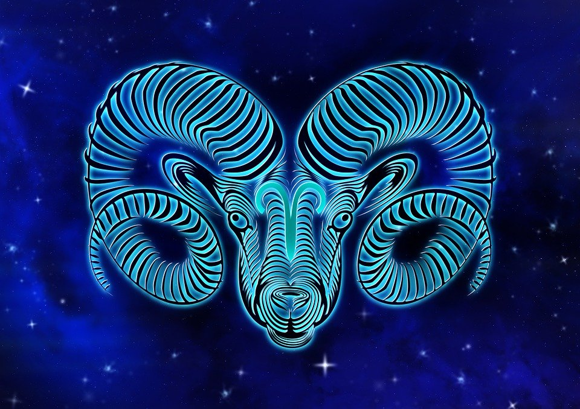
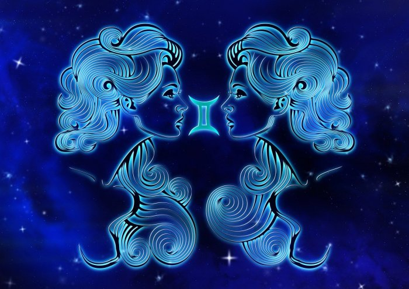
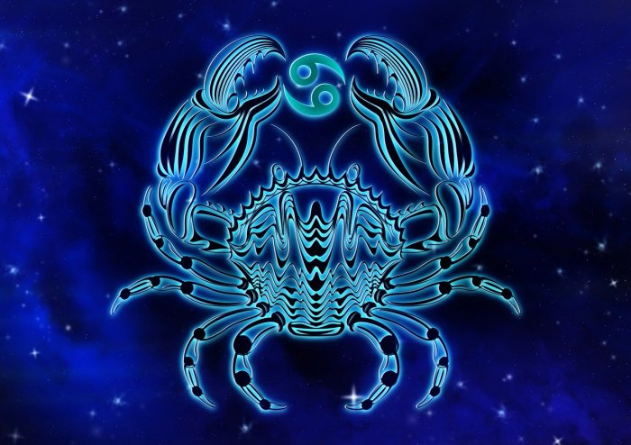
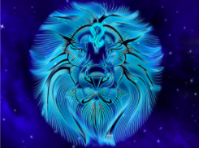
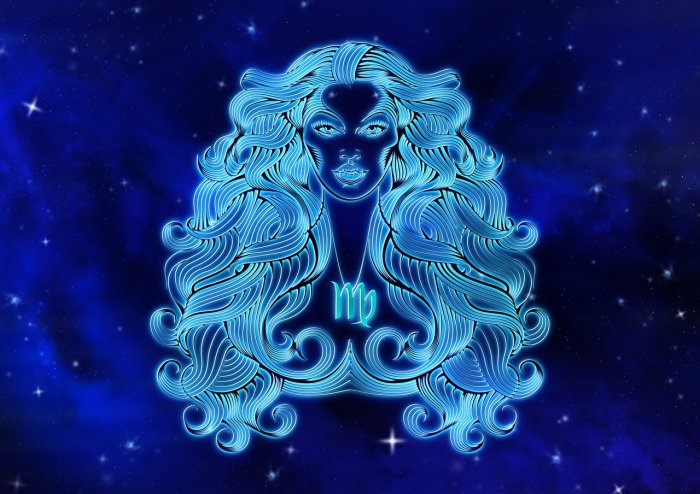
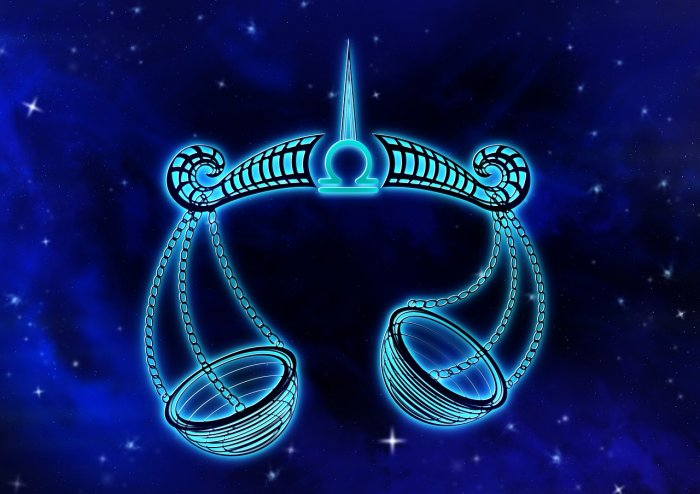
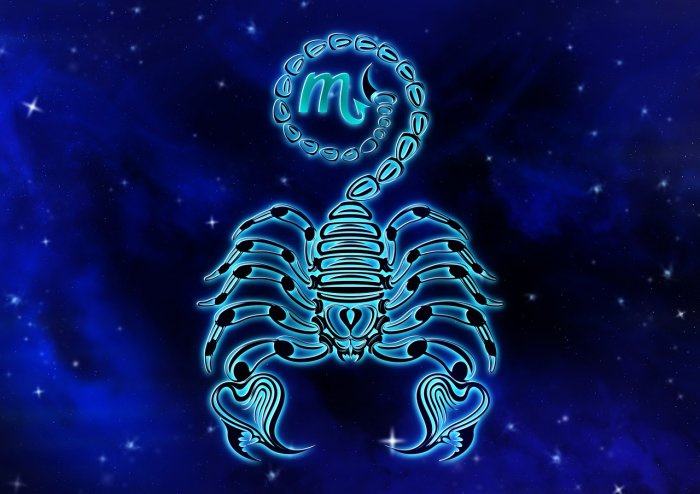
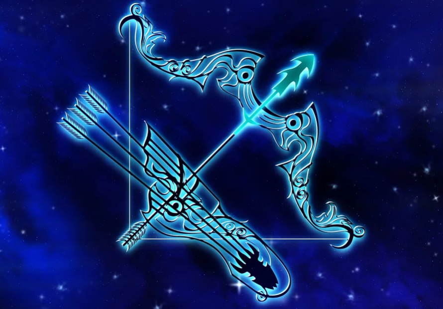
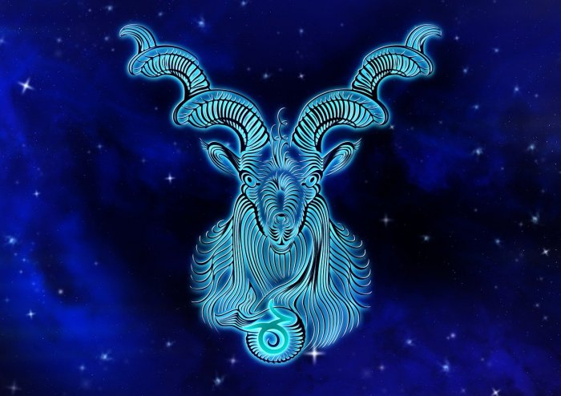

Covers all 'firsts'. i.e. impressions, beginnings, leadership, initiatives, etc. The sign on the cusp of this house is referred to as your rising sign. This house is ruled by Aries
Concerns matters relating to your immediate physical enviornment and the 5 senses. It rules self-esteem, income, and money. The 2nd House is ruled by Taurus.

Ruled by Gemini, this House relates to all forms of communication such as talking, thinking, virtual, etc. as well as neighborhoods, libraries, schools, local travel, teachers, sibings, and community affairs.
This house sits at the bottom of the wheel and represents the foundation of all things including your home, security, privacy, and parents. It is ruled by Cancer
Ruled by Leo, this house governs drama, romance, creativity, attention, fun, and color.
Concerns all to do with health and service, including schedules, diet and excersize, routines, natural and healty living, helpfulness, etc. It is ruled by Virgo
This house, ruled by Libra, relates to relationships, partnerships, contracts, marriages, and other business deals.
This mysterious house ruled by Scorpio concerns birth, death, transformation, sex, ysteries, bonding, and merged energies, as well as other people's money and property.
This house covers expansion, the higher mind, higher education, foreign languages, inspiration, optimism, broadcasting, gambling, adventurs, philosophy, morals, ethics religion, long distance traveling, luck, and risk. It is ruled by Sagittarius
At the top and most public part of the wheel, this house ruled by Capricorn governs structures, tradition, corporations, public image, honor, fame, authority, discipline, fatherhood, awards, boundaries, etc.
This house covers all to do with friendships, society, technology, media, rebellion, networking, social justice, originality, eccentricity, suprises, invention, and all things futuristic. It is ruled by Aquarius

The final House, ruled by Pisces, governs endings, tying up loose ends, hidden agendas, hospitals, jails, and secret enemies.